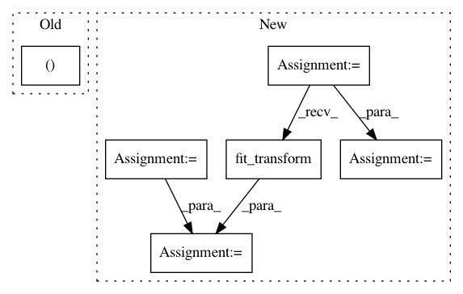

7e243b7e30385832e7d9f9f2d088e23860bc07e2,ChemML_PyScript.py,,,#,3
Before Change
////////////////////////////////////////////////////// MISSING_VALUES ////////////////////////////////////////////////////////
from cheml import preprocessing
rata, target = preprocessing.missing_values(method = "mean",
string_as_null = True,
inf_as_null = True,
missing_values = "False")
After Change
data = missval.fit(data)
target = missval.fit(target)
from sklearn.preprocessing import Imputer
imp = Imputer(strategy = "mean",
missing_values = "NaN",
axis = 0,
verbose = 0,
copy = True)
df_columns = data.columns
data = imp.fit_transform(data)
data = pd.DataFrame(data,columns=df_columns)
df_columns = target.columns
target = imp.fit_transform(target)
target = pd.DataFrame(target,columns=df_columns)
//////////////////////////////////////////////////////
In pattern: SUPERPATTERN
Frequency: 3
Non-data size: 6
Instances
Project Name: hachmannlab/chemml
Commit Name: 7e243b7e30385832e7d9f9f2d088e23860bc07e2
Time: 2016-01-04
Author: mojtabah@buffalo.edu
File Name: ChemML_PyScript.py
Class Name:
Method Name:
Project Name: logpai/loglizer
Commit Name: d990f23b72c2409084a799bdf49109a996a02256
Time: 2019-02-17
Author: zhujm.home@gmail.com
File Name: demo/PCA_demo.py
Class Name:
Method Name:
Project Name: scikit-learn-contrib/categorical-encoding
Commit Name: 9e2385f00975bcba7926396c6563eb8488d778f6
Time: 2018-09-02
Author: jan@motl.us
File Name: examples/benchmarking_large/util.py
Class Name:
Method Name: train_encoder